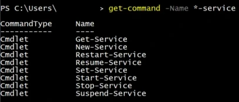
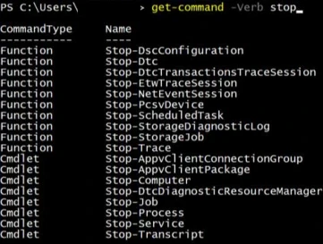
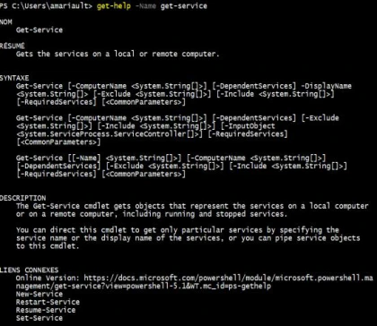
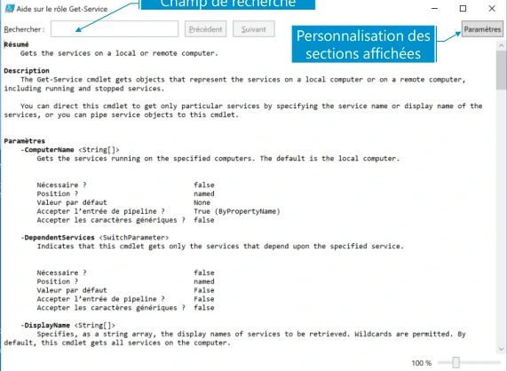
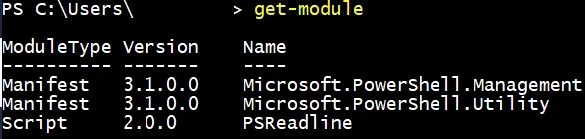
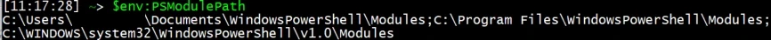
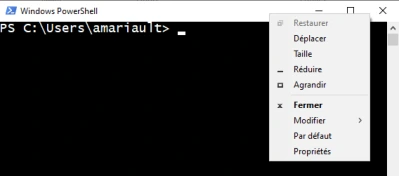
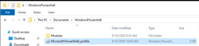

Module 01 — Initiation à PowerShell¶
La transcription du support Drive et l’aide pédagogique sont séparées pour rendre leur provenance explicite.
SOURCE DRIVE · TRANSCRIPTION DU SUPPORT
Le contenu des documents du dossier TSSR est transcrit ci-dessous, page par page. Les textes et tableaux sont intégrés à la page Web. Aucun fichier PDF, aucune diapositive entière ni aucune reproduction de page n’est affiché. Seuls des croquis ou visuels isolés et vérifiés peuvent accompagner la transcription. Les versions et les consignes restent celles des supports de formation. Les compléments IA sont conservés dans leur onglet distinct.
Support · Module 01 - Support de cours · 12 pages transcrites
Transcription du support du Drive. Les formulations historiques et les exemples du document sont conservés. Les valeurs d’accès du laboratoire sont indiquées comme « fourni par le formateur ». Les adresses de messagerie personnelles utilisent example.com.
Initiation à PowerShell
Module 01 – Présentation du langage PowerShell
Objectifs
- Appréhender le fonctionnement des commandes PowerShell
L’évolution de PowerShell dans le temps
- Sorti en 2006, PowerShell V1.0 était disponible sur les systèmes Windows XP Sp2, Vista et Windows Server 2003 Sp1.
- Cette première version apporte 129 commandes réparties sur 5 modules.
Un outil flexible, performant et totalement adapté aux besoins des
techniciens et admins !
- La version 5.1 est actuellement installée par défaut sur Windows 10 et Windows server 2019.
- Elle met à disposition 2855 commandes et supporte plusieurs milliers de modules par exemple « Azure », « Exchange »...
L’évolution de PowerShell dans le temps
- Chaque montée de version apporte :
- De nouvelles commandes (Cmdlets et fonctions)
- Des mises à jour de commandes existantes
- La disponibilité de nouveaux modules
- Des mises à jour de l’interpréteur PowerShell
- De grands éditeurs comme VMware, Cisco, Sonicwall, Veeam… ont développé des modules permettant de piloter leurs plateformes et produits depuis PowerShell.
PowerShell Core
- Depuis août 2016 et dans la lignée des Frameworks .NET deux ans auparavant, PowerShell est passé en Open Source.
- La montée en version de PowerShell Core suit les évolutions du Framework .NET Core Actuellement en version 3.0.
- PowerShell Core est actuellement en 7.0, les avantages de la versions Core sont :
- Une prise en charge multiplateformes.
- La possibilité de créer des modules personnels.
- ...
- …
PowerShell Core
- C’est une évolution majeure de Microsoft ces dernières années, démontrant une volonté d’ouverture vers d’autres environnements.
Plus de rivalité, aujourd’hui tout
le monde cohabite !
- D’autres exemples récents d’ouverture :
- L’intégration du Bash dans Windows 10
- SQL Server porté sur Linux
- L’ouverture vers le monde Linux dans Azure
- …
Les différentes versions de PowerShell Core
| Version | MacOS | Red Hat | CentOS | Oracle Linux | Fedora | Debian | Ubuntu | Open SUSE |
|---|---|---|---|---|---|---|---|---|
| PowerShell Core 7 | 10.13 | 8 | 8 | 7 | 32 | 9,10 | 20,04 | 42.2+ |
| PowerShell Core 6.1 | 10.12+ | 7 | 7 | - | 27,28 | 8.7+, 9 | 18.10 | 42.2+ |
Installable aussi sous Windows
à partir des versions 7 SP1,
2008 R2 et supérieur.
Les particularités PowerShell Core
- Pour les habitués de PowerShell sous Windows, Powershell Core nécessite quelques points d’attention :
- Pas de requêtes WMI ou CIM (propres aux systèmes Windows)
- Un certain nombre de commandes utilisant du WMI sont donc indisponibles
- Pas de planification de tâches via cmdlets
- Certains alias ne sont pas disponibles
- Utilisation du Remoting PowerShell impossible
- Sous Linux, on respecte la casse !
- Certaines incompatibilités sur des fonctions avec des scripts Windows
| Version | MacOS | RedHat | CentOS | Oracle Linux | Fedora | Debian Ubuntu OpenSUSE |
| PowerShellCore7 | 1013 . | 8 | 8 | 7 | 32 | 910 2004 422+ , , . |
| PowerShellCore61 . | 1012+ . | 7 | 7 | - | 2728 , | 87+ 9 1810 422+ . , . . |
| InstallableaussisousWindows | ||||||
| àpartirdesversions7SP1 , | ||||||
| 2008R2etsupérieur . | ||||||
| 7 |
Les Cmdlets
- Les commandes PowerShell sont toujours composées ainsi :
Verbe - Nom
Get-ChildItem
Get-Service
Get-Volume
Get-Process
Get-Item
Get-SMBShare- Elles sont « parlantes », il est facile de deviner leur utilité
Le nom sera toujours au singulier
Les Cmdlets
- Les commandes PowerShell disposent de paramètres nécessaires au bon fonctionnement de la commande :
PS > Get-LocalUser -Name « Nom de l’utilisateur recherché »- Le paramètre est systématiquement indiqué avec un tiret. Une commande peut disposer de plusieurs paramètres.
PS > Get-LocalGroupMember –Group « Nom du groupe recherché » -
Member « Membre du groupe recherché dans le groupe indiqué »- Dans cet exemple, deux paramètres pour une commande.
La valeur fournie aux paramètres est l’argument
Get-Command
- Get-Command permet de rechercher et d’afficher les commandes disponibles. La recherche se fait sur le paramètre –Name.
- On utilise le caractère * pour substituer une chaîne de caractères.
Exemple Je recherche toutes les commandes relatives à la gestion des services.
PS > Get-Command -Name *-ServiceLe résultat de la commande affiche toutes les « cmdlets » terminées par le nom « Service »
Get-Command
Get-Command permet également d’effectuer une recherche sur le
paramètre –Verb.Exemple Je recherche toutes les commandes utilisant le verbe « Stop ».
PS > Get-Command -Verb StopLe résultat de la commande affiche toutes les cmdlets dont le verbe d’action est « Stop »




Get-Help
- Une fois la commande trouvée, il nous faut comprendre comment l’utiliser.
- La solution est bien connue, il faut lire le manuel.
- Toute Cmdlet comporte un manuel. Il est disponible avec la commande :
Get-Help suivi du paramètre –Name
« La Cmdlet concernée »
PS > Get-Help -Name Get-ServiceGet-Help
L’aide de la commande est affiché dans la console.
- Nous pouvons utiliser des paramètres supplémentaires afin d’améliorer les informations obtenues.
- L’aide des commandes est répartie en catégories. Le paramètre -Full permet d’afficher toutes les catégories disponibles dans l’aide d’une commande.
PS > Get-Help -Name Get-Service -Full- On obtient une aide complète plus détaillée avec des exemples d’utilisation de commande, une catégorie lien plus fournie.
PS > Get-Help -Name Get-Service -Full- Le paramètre -Online permet de suivre le lien fourni dans l’aide et de l’ouvrir dans un navigateur web. L’aide en ligne fournit la version la plus à jour avec des liens vers des commandes annexes.


Get-Help
- Le paramètre -Examples permet d’afficher uniquement les exemples d’utilisation de la commande.
PS > Get-Help -Name Get-Service -Examples- Pour faciliter la lecture de l’aide, PowerShell met à disposition une fenêtre avec un champ de recherche. Cela permet de filtrer les catégories, copier-coller des exemples, etc.
PS > Get-Help –Name Get-Service -ShowWindowChamp de recherche
Get-Help
Personnalisation des
sections affichées
Aide dans une nouvelle fenêtre


Update-Help
- Il est possible de mettre à jour l’ensemble des fichiers d’aide avec la commande :
PS > Update-Help- Sans paramètres, cette commande va tenter de chercher sur le web les mises à jour de l’aide en passant par le service Windows Update
- Dans le cas où le service serait inaccessible, il est possible d’indiquer une source locale contenant les fichiers d’aide.
PS > Update-Help –SourcePath D:\PowerShell- Il est également possible de choisir un langage.
PS > Update-Help –SourcePath D:\PowerShell –UICulture En-USCes commandes nécessitent un PowerShell avec les droits administrateur.
La commande de protection
- L’exécution de script est par défaut soumise à une forte restriction.
- Le niveau de confiance requis pour l’exécution est modifiable :
- Restricted (par défaut) Niveau de sécurité élevé
- AllSigned
- Remote Signed
Cette commande permet l’exécution de tous les scripts.
- Unrestricted Niveau de sécurité limité
- Bypass
- Default
- Undefined
PS > Set-ExecutionPolicy –ExecutionPolicy
UnrestrictedCes commandes nécessitent un PowerShell avec les droits administrateurs
Les modules
- Chaque Cmdlet provient d’un module PowerShell.
- Les modules PowerShell sont des fichiers portant l’extension .PSM1.
- La commande Get-Module permet de voir les modules actuellement disponibles dans PowerShell.
Les modules - Ajout
PS > $env:PsModulePath- Après la récupération d’un fichier PSM1 pour connaître l’emplacement disponible, il faut saisir la commande :
- Après la copie du fichier dans l’emplacement, on importe le module dans la console :
PS > Import-Module –Name « Le nom du dossier contenant le module »- Puis on vérifie l’importation :
PS > Get-Command –module « Le nom du module »Ces commandes nécessitent un PowerShell avec les droits administrateurs.
Il faut également modifier les droits d’exécution de script sur le système.




La personnalisation de la console
- Il est possible de modifier les propriétés de la console PowerShell en faisant un clic droit sur le bandeau puis en cliquant sur propriétés.
- La console se personnalise par le choix d’une police de la taille des caractères ainsi que des couleurs de caractères.
- Il est également possible de créer un profil personnalisé en saisissant la commande :
PS > New-Item –Path $Profile –Type File -Force- Cette commande écrit dans le dossier Documents de l’utilisateur actuel un fichier PS1 qui peut contenir des commandes qui seront exécutées à l’ouverture de la console PowerShell.
Découverte de PowerShell
TP




Conclusion
- Vous connaissez le fonctionnement des commandes PowerShell
Référence du document : 1_iY1RKpxTekTi-QKbupFI4pP_tK2LRI1 · SHA-256 648c293e26027e17…
Complément IA / externe au cours — fiche pédagogique du portail
Cette fiche contient une reformulation et des aides d’apprentissage rédigées par IA. Elle est distincte de la transcription des documents du Drive et ne la remplace pas. Les schémas de synthèse de cette fiche sont des illustrations IA / externes au cours, sauf les captures explicitement attribuées à un document source.
Les parties ci-dessous reprennent le cours original, dans le même ordre. Les encadrés et les schémas répètent ses formulations.
Parcours de lecture¶
- Support · Module 01 - Support de cours · 12 pages transcrites
Visuel externe
Illustration IA / externe au cours — schéma pédagogique de synthèse.
SOURCE DRIVE · TRANSCRIPTION DU SUPPORT
Le contenu des documents du dossier TSSR est transcrit ci-dessous, page par page. Les textes et tableaux sont intégrés à la page Web. Aucun fichier PDF, aucune diapositive entière ni aucune reproduction de page n’est affiché. Seuls des croquis ou visuels isolés et vérifiés peuvent accompagner la transcription. Les versions et les consignes restent celles des supports de formation. Les compléments IA sont conservés dans leur onglet distinct.
Support · Module 01 - Support de cours · 12 pages transcrites¶
À retenir
Les formulations historiques et les exemples du document sont conservés.
Transcription du support du Drive. Les formulations historiques et les exemples du document sont conservés. Les valeurs d’accès du laboratoire sont indiquées comme « fourni par le formateur ». Les adresses de messagerie personnelles utilisent example.com.
Initiation à PowerShell¶
À retenir
Module 01 – Présentation du langage PowerShell
Module 01 – Présentation du langage PowerShell
Objectifs¶
À retenir
Appréhender le fonctionnement des commandes PowerShell
- Appréhender le fonctionnement des commandes PowerShell
L’évolution de PowerShell dans le temps¶
À retenir
Sorti en 2006, PowerShell V1.0 était disponible sur les systèmes Windows XP Sp2, Vista et Windows Server 2003 Sp1.
Exemple
Elle met à disposition 2855 commandes et supporte plusieurs milliers de modules par exemple « Azure », « Exchange »...
- Sorti en 2006, PowerShell V1.0 était disponible sur les systèmes Windows XP Sp2, Vista et Windows Server 2003 Sp1.
- Cette première version apporte 129 commandes réparties sur 5 modules.
Un outil flexible, performant et totalement adapté aux besoins des
techniciens et admins !
- La version 5.1 est actuellement installée par défaut sur Windows 10 et Windows server 2019.
- Elle met à disposition 2855 commandes et supporte plusieurs milliers de modules par exemple « Azure », « Exchange »...
L’évolution de PowerShell dans le temps¶
Visuel externe
Illustration IA / externe au cours — schéma pédagogique de synthèse.
- Chaque montée de version apporte :
- De nouvelles commandes (Cmdlets et fonctions)
- Des mises à jour de commandes existantes
- La disponibilité de nouveaux modules
- Des mises à jour de l’interpréteur PowerShell
- De grands éditeurs comme VMware, Cisco, Sonicwall, Veeam… ont développé des modules permettant de piloter leurs plateformes et produits depuis PowerShell.
PowerShell Core¶
À retenir
Depuis août 2016 et dans la lignée des Frameworks .NET deux ans auparavant, PowerShell est passé en Open Source.
Visuel externe
Illustration IA / externe au cours — schéma pédagogique de synthèse.
- Depuis août 2016 et dans la lignée des Frameworks .NET deux ans auparavant, PowerShell est passé en Open Source.
- La montée en version de PowerShell Core suit les évolutions du Framework .NET Core Actuellement en version 3.0.
- PowerShell Core est actuellement en 7.0, les avantages de la versions Core sont :
- Une prise en charge multiplateformes.
- La possibilité de créer des modules personnels.
- ...
- …
PowerShell Core¶
À retenir
C’est une évolution majeure de Microsoft ces dernières années, démontrant une volonté d’ouverture vers d’autres environnements.
Visuel externe
Illustration IA / externe au cours — schéma pédagogique de synthèse.
- C’est une évolution majeure de Microsoft ces dernières années, démontrant une volonté d’ouverture vers d’autres environnements.
Plus de rivalité, aujourd’hui tout
le monde cohabite !
- D’autres exemples récents d’ouverture :
- L’intégration du Bash dans Windows 10
- SQL Server porté sur Linux
- L’ouverture vers le monde Linux dans Azure
- …
Les différentes versions de PowerShell Core¶
À retenir
Installable aussi sous Windows à partir des versions 7 SP1, 2008 R2 et supérieur.
| Version | MacOS | Red Hat | CentOS | Oracle Linux | Fedora | Debian | Ubuntu | Open SUSE |
|---|---|---|---|---|---|---|---|---|
| PowerShell Core 7 | 10.13 | 8 | 8 | 7 | 32 | 9,10 | 20,04 | 42.2+ |
| PowerShell Core 6.1 | 10.12+ | 7 | 7 | - | 27,28 | 8.7+, 9 | 18.10 | 42.2+ |
Installable aussi sous Windows
à partir des versions 7 SP1,
2008 R2 et supérieur.
Les particularités PowerShell Core¶
Visuel externe
Illustration IA / externe au cours — schéma pédagogique de synthèse.
- Pour les habitués de PowerShell sous Windows, Powershell Core nécessite quelques points d’attention :
- Pas de requêtes WMI ou CIM (propres aux systèmes Windows)
- Un certain nombre de commandes utilisant du WMI sont donc indisponibles
- Pas de planification de tâches via cmdlets
- Certains alias ne sont pas disponibles
- Utilisation du Remoting PowerShell impossible
- Sous Linux, on respecte la casse !
- Certaines incompatibilités sur des fonctions avec des scripts Windows
| Version | MacOS | RedHat | CentOS | Oracle Linux | Fedora | Debian Ubuntu OpenSUSE |
|---|---|---|---|---|---|---|
| PowerShellCore7 | 1013 . | 8 | 8 | 7 | 32 | 910 2004 422+ , , . |
| PowerShellCore61 . | 1012+ . | 7 | 7 | - | 2728 , | 87+ 9 1810 422+ . , . . |
| InstallableaussisousWindows | ||||||
| àpartirdesversions7SP1 , | ||||||
| 2008R2etsupérieur . | ||||||
| 7 |
Les Cmdlets¶
- Les commandes PowerShell sont toujours composées ainsi :
Verbe - Nom¶
- Elles sont « parlantes », il est facile de deviner leur utilité
Le nom sera toujours au singulier
Les Cmdlets¶
- Les commandes PowerShell disposent de paramètres nécessaires au bon fonctionnement de la commande :
- Le paramètre est systématiquement indiqué avec un tiret. Une commande peut disposer de plusieurs paramètres.
PS > Get-LocalGroupMember –Group « Nom du groupe recherché » -
Member « Membre du groupe recherché dans le groupe indiqué »
- Dans cet exemple, deux paramètres pour une commande.
La valeur fournie aux paramètres est l’argument
Get-Command¶
- Get-Command permet de rechercher et d’afficher les commandes disponibles. La recherche se fait sur le paramètre –Name.
- On utilise le caractère * pour substituer une chaîne de caractères.
Exemple Je recherche toutes les commandes relatives à la gestion des services.
Le résultat de la commande affiche toutes les « cmdlets » terminées par le nom « Service »
Get-Command¶
Exemple Je recherche toutes les commandes utilisant le verbe « Stop ».
Le résultat de la commande affiche toutes les cmdlets dont le verbe d’action est « Stop »
Capture du support « Module 01 - Support de cours »
Capture du support « Module 01 - Support de cours »
Get-Help¶
- Une fois la commande trouvée, il nous faut comprendre comment l’utiliser.
- La solution est bien connue, il faut lire le manuel.
- Toute Cmdlet comporte un manuel. Il est disponible avec la commande :
Get-Help¶
L’aide de la commande est affiché dans la console.
- Nous pouvons utiliser des paramètres supplémentaires afin d’améliorer les informations obtenues.
- L’aide des commandes est répartie en catégories. Le paramètre -Full permet d’afficher toutes les catégories disponibles dans l’aide d’une commande.
- On obtient une aide complète plus détaillée avec des exemples d’utilisation de commande, une catégorie lien plus fournie.
- Le paramètre -Online permet de suivre le lien fourni dans l’aide et de l’ouvrir dans un navigateur web. L’aide en ligne fournit la version la plus à jour avec des liens vers des commandes annexes.
Capture du support « Module 01 - Support de cours »
Get-Help¶
- Le paramètre -Examples permet d’afficher uniquement les exemples d’utilisation de la commande.
- Pour faciliter la lecture de l’aide, PowerShell met à disposition une fenêtre avec un champ de recherche. Cela permet de filtrer les catégories, copier-coller des exemples, etc.
Champ de recherche
Get-Help¶
Personnalisation des
sections affichées
Aide dans une nouvelle fenêtre
Capture du support « Module 01 - Support de cours »
Update-Help¶
- Il est possible de mettre à jour l’ensemble des fichiers d’aide avec la commande :
- Sans paramètres, cette commande va tenter de chercher sur le web les mises à jour de l’aide en passant par le service Windows Update
- Dans le cas où le service serait inaccessible, il est possible d’indiquer une source locale contenant les fichiers d’aide.
- Il est également possible de choisir un langage.
Ces commandes nécessitent un PowerShell avec les droits administrateur.
La commande de protection¶
- L’exécution de script est par défaut soumise à une forte restriction.
- Le niveau de confiance requis pour l’exécution est modifiable :
- Restricted (par défaut) Niveau de sécurité élevé
- AllSigned
- Remote Signed
Cette commande permet l’exécution de tous les scripts.
- Unrestricted Niveau de sécurité limité
- Bypass
- Default
- Undefined
Ces commandes nécessitent un PowerShell avec les droits administrateurs
Les modules¶
- Chaque Cmdlet provient d’un module PowerShell.
- Les modules PowerShell sont des fichiers portant l’extension .PSM1.
- La commande Get-Module permet de voir les modules actuellement disponibles dans PowerShell.
Les modules - Ajout¶
- Après la récupération d’un fichier PSM1 pour connaître l’emplacement disponible, il faut saisir la commande :
- Après la copie du fichier dans l’emplacement, on importe le module dans la console :
- Puis on vérifie l’importation :
Ces commandes nécessitent un PowerShell avec les droits administrateurs.
Il faut également modifier les droits d’exécution de script sur le système.
Capture du support « Module 01 - Support de cours »
Capture du support « Module 01 - Support de cours »
La personnalisation de la console¶
- Il est possible de modifier les propriétés de la console PowerShell en faisant un clic droit sur le bandeau puis en cliquant sur propriétés.
- La console se personnalise par le choix d’une police de la taille des caractères ainsi que des couleurs de caractères.
- Il est également possible de créer un profil personnalisé en saisissant la commande :
- Cette commande écrit dans le dossier Documents de l’utilisateur actuel un fichier PS1 qui peut contenir des commandes qui seront exécutées à l’ouverture de la console PowerShell.
Découverte de PowerShell¶
TP
Capture du support « Module 01 - Support de cours »
Capture du support « Module 01 - Support de cours »
Conclusion¶
- Vous connaissez le fonctionnement des commandes PowerShell
Référence du document : 1_iY1RKpxTekTi-QKbupFI4pP_tK2LRI1 · SHA-256 648c293e26027e17…
| Support · Module 01 - Support de cours · 12 pages transcrites | Les formulations historiques et les exemples du document sont conservés. |
M01 — Initiation à PowerShell
20 questions
Teste tes connaissances sur ce module.